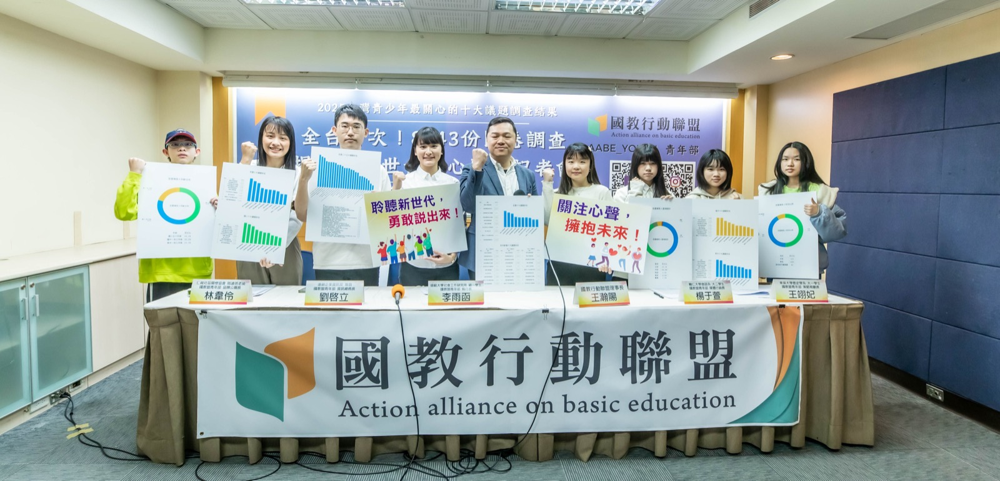

全國青少年最關注的十大議題
8,742 位青少年的聲音，讓我們一起聽見
關於調查
「這世代的心聲」— 讓青少年的聲音被聽見
國教行動聯盟青年部以「這世代的心聲」為主題，聚焦2025年全國青少年最關注的十大議題，旨在讓青少年感受到自己的聲音被聽見、意見被重視，並呼籲政府及社會大眾共同關注下一代的需要。
我們期待透過此調查，揭示以青少年角度認為教育體系中需要改進的地方，並促進教育政策改革，讓教育體系更加符合青少年的需求與期望。
📋 題目設計
根據學生與家長的意見，整理出最能反映當前青少年關心議題的25個問題，涵蓋：校園安全、校園環境、人際關係、情感與情緒教育、課綱學習與生涯、公共政策、家庭教育以及公民教育。
📊 調查方式
採用電子問卷線上填答方式，透過教師、家長及學生團體等合作發放。問題採用Likert量表（1-5顆星）讓學生衡量其對該議題的關注程度。
🎯 調查對象
國小五年級至高中三年級的青少年，涵蓋全國22縣市，最終收集8,742份有效問卷。
📅 調查期間
問卷調查時間為 2024/12/11 - 2025/01/10，調查結果於 2025/01/21 記者會正式公布。
🔍 前置作業
國教盟青年部透過座談訪談的方式，初步了解學生對於自己生活中所關注的議題，例如：校園安全、學習壓力、課程內容、情感與情緒管理等方面的問題，同時也收集家長對於學生生活的關注。另外也針對過去一年發生的社會事件，了解學生對這些事件的關心程度和看法。問卷初步完成後，也隨機分別給國小、國中及高中各五位學生試填，確保學生能理解題目之意思。
新聞稿
青年部歷次記者會新聞稿下載
媒體報導
十大議題相關新聞露出整理
十大議題調查結果發布
全台首次！8,743份問卷揭示「這世代的心聲」
📰 新聞露出 25 篇
議題一：網路資訊辨識與詐騙預防
國教盟青年部呼籲：列入課綱、師資增能、落實檢核
📰 新聞露出 24 篇
議題二：菸品與藥物使用警告
青少年陷入菸、毒與心理健康三重危機
📰 新聞露出 24 篇
議題三：正確性觀念與互相尊重教育
國教盟青年部呼籲應補上保護課
📰 新聞露出 43 篇
📊 十大議題相關新聞露出累計 119 篇
認識我們
國教行動聯盟青年部
在臺灣教育制度發展歷程中，學生經常位於政策調整與制度變革的最前線，卻未必同時具備充分而有效的制度性發聲管道。教育政策影響深遠，涉及升學制度、課程設計、校園環境及學生權益等面向，其制定與修正理應納入利害關係人之實質參與，特別是直接受影響之青年世代。
2024年6月，國教行動聯盟青年部正式成立。青年部由關心公共事務之學生與青年組成，核心理念在於強化青年於教育政策討論中的主體性地位。我們主張，教育改革不應僅由行政機關或專家單向規劃，而應建立更具對話性與回饋機制之公共參與模式。

2025 青少年十大關注議題調查結果發布記者會
青年部運作方式
青年部延續國教行動聯盟理性監督、制度檢視與數據論證之精神，透過以下方式參與公共討論：
- 一、政策分析與意見彙整：蒐集學生、家長與教師之經驗觀察，整理具體問題與改善建議。
- 二、立法與行政溝通：拜會立法委員及相關主管機關，提出具可行性與制度基礎之建議。
- 三、公共論壇與倡議活動：辦理座談、辯論與說明會，促進理性討論與資訊透明。
- 四、議題研究與書面建議：以資料蒐集與比較法視點為基礎，提出制度層面之修正方向。
我們認為，公共參與不應流於情緒性動員，而應建立在清楚定義問題、釐清政策目的、評估制度效果與衡量公共利益之基礎上。唯有透過理性討論與程序正義的累積，青年世代才能真正成為教育改革的參與者，而非被動承受者。
青年部期待透過持續參與公共事務與制度監督，使教育政策更貼近教學現場實況，更符合比例原則與公共利益要求，並在保障學生權益的前提下，推動臺灣教育體系朝向更穩定與可預測之發展方向。
— 國教行動聯盟青年部
聯絡我們
歡迎與我們交流
國教行動聯盟青年部
Action Alliance on Basic Education - Youth Division
© 2025 National Alliance for Education Reform - Youth Division